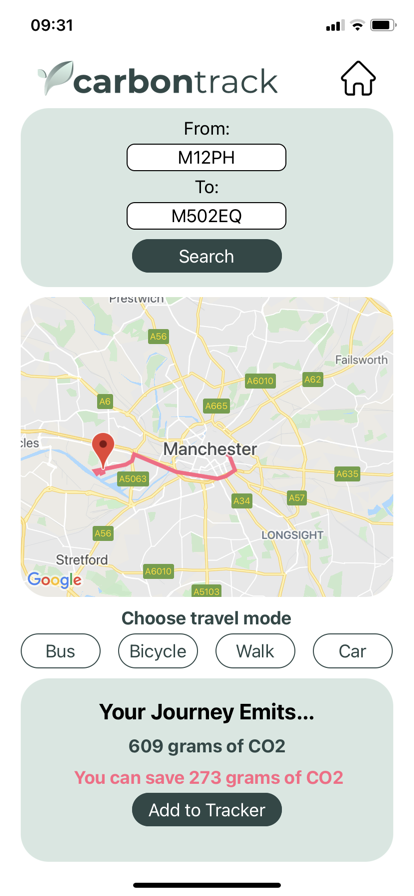
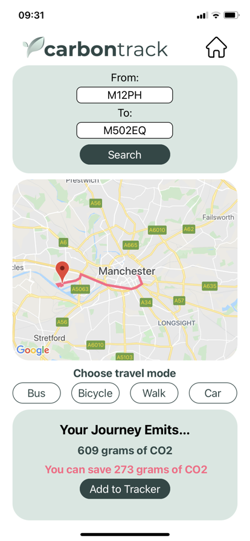

Carbon Track is a mobile app built using React Native and AWS Dyanmo DB. This was a team built project for the final part of the Northcoders Bootcamp.
The app calculates the amount of CO2 emitted for a journey based on the user's vehicle. Users are shown alternative routes using different travel options which emission savings calculated. Journeys can be tracked and compared with friends or family. Work colleagues can create a commuting group or for all those secret green introverts out there the option to ride solo.
The app was built to improve awareness for the amount of C02 emissions produced on everyday journeys by car. Climate change is currently one of the biggest issues facing the planet right now. Hopefully this app can go a small way to increasing awareness around this important topic and getting people involved in the push for better climate action.

 

Northcoders (NC) News is a project built for the purpose of providing a frontend architecture to the NC News Service API that I built in a previous project. The intention of this React application is to mimic the building of a real world frontend news site.
The technologies and packages used for this project included React, HTML, CSS and axios.
The project is built and hosted through Netlify
Northcoders (NC) News Service API is a project built for the purpose of accessing application data programmatically. The intention is to mimic the building of a real world backend news service (such as reddit) which should provide this data to the front end architecture.
The technologies and packages used for this project included postgreSQL, express, pg, pg-format, jest and supertest.
The project is hosted through Heroku and incorporates CI/CD